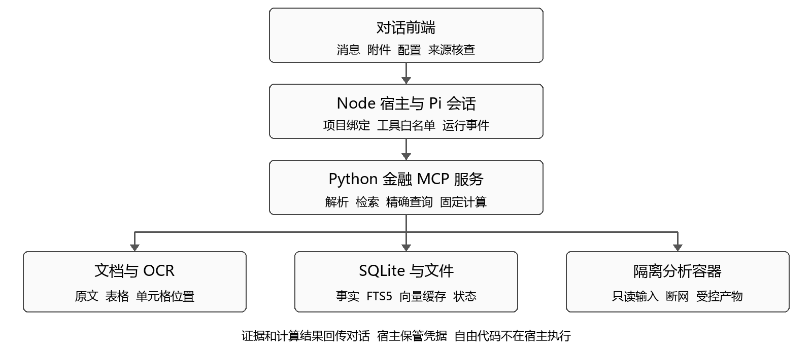

作者姓名待填写 单位待填写
工程论文初稿 2026年10月3日 三轮冻结评测归档
针对财报问答中金额口径混淆、来源难以定位及分析代码缺少隔离的问题，本文实现单机财报分析系统。单一Pi智能体组织任务，Python MCP服务负责解析、检索、查询与十进制计算，SQLite保存事实和证据，独立Docker容器执行科学计算。自建回归集含三份中文年报及FinQA抽样，共186题；公开标签经先读材料、独立求解、再比较旧答案的代理复核后冻结。官方deepseek-flash在124题验收集上完成三轮，答案正确率为83.06%—87.90%，答案及证据联合正确率为66.94%—69.35%，结论一致率90.32%，未达到全部预设门槛。历史确定性解析对同30个事实重复三轮通过90/90，独立真实年报制图演示的6个金额核对一致，两者均不替代模型评测。结果表明工程链路能够运行，但歧义拒答、证据格式和稳定性仍有不足；标签集合覆盖及公开规范的解释冲突亦限制评分结论。
关键词：财报分析；工具调用；证据追踪；MCP；结构化查询；隔离执行
年度财务报告同时包含正文、会计报表、附注、比较期数据及审计意见。读者提出“利润增长是否得到现金流支持”时，需要先定位正确公司的年度数据，区分归母利润与净利润，统一金额单位，再完成计算并解释结果。自然语言生成只是工作链条的最后一环。如果系统把原始财报一次性塞入模型上下文，用户通常只能看到一个看似完整的结论，难以确认数字来自哪一页、采用何种口径，也难以复查算术过程。
财报场景中的小错误可能形成数量级差异。以本项目处理的公开资料为例，同为主要会计数据表，一份报告直接以元披露，另一份使用千元。两个原始字符串虽然都能被识别为数值，却不能在未经换算的情况下比较。跨页表格还会出现表头与数据分离、空列数量改变、印刷页码与 PDF 物理页码不同等问题。只检查回答是否流畅或是否包含引用标记，不能覆盖这些失效方式。
本文的目标是实现一套可以上传文件、查询数值、执行分析、追溯证据并保留运行记录的应用。系统贡献主要体现在三个方面：把模型负责的任务组织与程序负责的数据处理分开；在事实、计算和原始位置之间保留可检查的关联；通过分层实验防止把局部测试通过误认为整体能力已经成立。本文不提出新的基础模型或训练算法，也不把自建回归集成绩表述为比赛官方评测或通用金融推理性能。
FinQA 面向财务材料中的数值推理，为问题提供文本、表格与可执行推理程序，强调金融问答不仅需要检索，还需要多步计算[1]。本文借鉴其可执行答案核验思路，从官方公开数据中抽取独立算术任务，作为英文补充层。由于本项目只选取其中的子集，题型分布和数据划分与官方完整实验不同，后续得分不能直接与论文中的完整 FinQA 结果比较。
检索增强生成将外部文档检索与语言生成连接，使答案能够使用可更新的非参数化信息[2]。财报系统还需要另一条精确查询通路：相关段落可以通过文本或向量匹配获得，但计算用的金额应从经过单位与期间校验的事实记录读取。因此，本文把证据检索与财务事实查询做成两个独立工具，并要求生成结果保留相应来源。
ReAct 研究了语言模型在任务执行中交替进行推理与外部动作的方式[3]。本文使用工具调用组织检索、查询与计算，但只向用户显示可观察的动作、工具结果和依据，不把模型内部思考过程当作审计证据。MCP 提供宿主、客户端和服务端之间的标准接口[4]；Pi SDK 则允许宿主应用嵌入会话、模型、资源和工具控制[5]。这些基础设施提供集成能力，项目权限校验和财务语义仍须由应用自行实现。
设输入文档集合为 D，用户问题为 q，项目标识为 p。系统的输出不仅是回答 a，还包括证据集合 E、计算记录 C 和产物集合 A。每个财务事实以公司、指标、期间、币种、会计口径、数值及来源位置表示。来源位置至少包含文档标识和物理页；对结构化表格还记录工作表、表标识、行列与单元格。相同数值在不同口径或来源版本下仍是不同事实，不能仅按指标名称覆盖。
流量指标使用年度期间，资产和权益等存量指标使用期末日期。营业收入、归母净利润和经营活动现金流量净额属于年度流量；总资产与归母净资产属于期末存量。用户上传的自定义表格如果没有说明币种、单位或合并口径，系统应显示信息不足或未指定口径，而不是填入一个方便计算的默认值。对同一事实键出现的冲突值，保存替代来源并返回复核提示。
可验证性要求用户能够从回答跳转到原始证据，并检查派生指标的输入和公式。固定公式不交给语言模型心算：同比增长率定义为本期与上期之差除以上期，再乘以 100；基期为零时返回无法计算，不生成无穷大或任意百分比。金额以十进制字符串保存，计算使用 Decimal，避免二进制浮点误差在金额比较中传播。
运行边界要求模型只能访问当前项目授权的数据和工具。上传接口接收文件后生成内部标识，文件路径由宿主控制；模型不获得任意 SQL、全盘读取或 shell 能力。自定义分析代码可以使用科学计算库，但不能因此继承模型密钥、数据库文件或容器管理权限。本项目以个人竞赛和研究环境为部署目标，不声称能完全抵御恶意多租户场景中的内核级攻击。
系统由 React 与 TypeScript 前端、Node 应用控制层、嵌入式 Pi 会话、Python 金融 MCP 服务、SQLite 数据层及分析容器组成。Pi 负责理解请求、选择工具和组织报告。解析器、检索器、固定公式计算与存储均作为确定性模块实现，没有为每个模块再创建一个智能体。当前任务的控制流主要是上传、解析、查询、分析和输出，单会话工具循环能够表达这一过程，暂不额外引入复杂状态图框架。

Node 控制层处理项目、会话、上传、配置、SSE 事件与取消请求，并把项目标识绑定到工具调用。Pi 会话显式设置业务工具集合和资源加载方式，使默认开发工具不会随运行环境自动进入财务任务。服务端再次检查项目、文档和任务的所属关系；宿主绑定与服务校验共同形成边界，不能只依赖提示词要求模型“不要读取其他项目”。
本系统选用 DeepSeek 官方 DeepSeek-V4.1-Flash，API 标识为 deepseek-flash，服务地址为 https://api.deepseek.com，支持工具调用与思考模式[11]。模型名称依据官方文档和实际模型列表核验，密钥由 Node 加密保存并在运行时注入，不进入文档、数据库事实或分析容器。模型承担任务组织和文字解释，精确数字仍必须来自项目内的查询与计算工具。
| 组件 | 承担的工作 | 重要约束 |
|---|---|---|
| 对话前端 | 附件、消息、配置、证据与下载 | 不直接向模型供应商发送密钥 |
| Node 与 Pi | 会话组织、工具白名单、任务事件 | 宿主绑定 project_id |
| Python MCP | 解析、查表、检索、固定计算 | 不开放任意 SQL 和主机路径 |
| SQLite 与文件目录 | 事实、索引、原文、任务状态 | 项目隔离及内容哈希 |
| 分析容器 | 科学计算与图表产物 | 输入只读、断网、资源受限 |
PDF 使用文本及几何信息抽取页面内容和表格，保存物理页与可识别的印刷页码。表格定位结果与全文片段分别入库。文本明显不足的页面或独立上传的图片转入 OCR 流程，保存识别框及置信信息，结果标记为需要复核。图片任务只使用上传图片，不因为文件名看起来对应某份年报就读取原 PDF，这一点对图像读表实验的有效性尤其重要。
Excel 直接读取工作表、单元格值、公式与已有缓存值；CSV 和 TSV 读取编码、分隔符及原始行列。含公式但缺少缓存值的单元格不被当作零，也不会在宿主机启动办公软件执行未知宏。标准化模块识别常见指标别名，处理千分位、括号负数、缺失标记与金额单位，并保留原字符串和规范值。无法明确识别的字段仍保存在原表中供检索，但不自动成为可计算事实。
跨页表格是实现中的一个实际故障点。解析器可能在一页插入多个空列，下一页却返回更少的列。直接复制上一页的列号，会让年份与同比列错位。本系统要求下一页的开头出现可识别财务指标，再根据表头与数据列的物理中心位置承接年份。OCR 表格也按年份文字的图像坐标对齐数值列，避免左上角没有指标标题时整体偏移；百分比文本不能作为金额入库。 parser 0.1.2另检查季度、月份和半年度表头；出现新的非年度期间时停止继承上一表的年度列映射，并保留原表供查阅。当前事实规范只覆盖年度，不能把季度金额强行标为全年。
事实查询优先采用主要会计数据等来源，但不会把不同公司、期间、币种或口径合并成一条记录。合并报表与母公司报表分别返回；接口允许显式筛选口径。遇到相同优先级而数值不同的候选记录，返回冲突提示和替代来源。规则覆盖范围是常见年度财务表格，不能等同于已经理解所有附注、会计重述和复杂财务报告版式。
SQLite 保存项目、文档、页面、表格、财务事实、文本片段、向量缓存与应用状态。数据库启用 WAL、外键和锁等待超时，由 Python 服务统一执行写入；Node 通过宿主专用工具保存对话与运行状态。WAL 改善读写并行，但不能消除所有写锁竞争，仍需控制事务长度[6]。原始文件与较大的图像、分析产物保存在目录中，数据库记录相对路径和哈希。
文档幂等键由项目、文件内容哈希和解析器版本构成。相同内容再次上传时复用已有文档与任务，不重复写入事实。解析阶段采用 queued、parsing、validating、ready、needs_review、failed 和 cancelled 状态；异常中断后的任务不能继续显示成功。服务重启时将未完成的解析标为失败，允许重新提交恢复，避免在界面上长期停留于不真实的进度。
检索分为词项匹配和可选向量匹配。FTS5 对中文构造重叠二元词，对拉丁文本使用词项；Embedding 由服务端调用单独配置的接口，缓存键包含项目、接口、模型、维度与文本哈希。上传解析完成、配置变化及检索时自动调度后台索引，配置变更使用新的缓存命名空间，避免错用其他模型的向量。检索遵守项目和公司等过滤条件，再融合可用排名。索引不完整或接口失败时，工具返回词项结果、索引状态与明确警告；精确财务问题直接查询规范化事实表。
固定公式工具支持同比、比值、利润率、现金转化率与基本算术，输入可以引用当前项目的事实标识。工具输出公式、原始输入、十进制结果、单位和来源集合。只有需要自由统计、定制图表或较复杂处理时，才把代码交给分析运行器。此分工使常见计算易于检查，也让动态代码的执行范围保持清晰。
运行器在每个任务开始前导出当前项目的表格与事实副本，不把数据库、完整工作区或标准答案目录挂入容器。容器使用非 root 用户、只读根文件系统、断网、禁用额外能力和 no-new-privileges，并限制 CPU、内存、进程数、运行时间及输出体积。Docker 默认并不会自动为所有容器设置所需资源上限，限制必须由启动参数明确指定[7]。启动权限只在可信宿主侧持有。
产物回收需要验证文件类型、大小、路径、普通文件属性及内容哈希，拒绝符号链接或路径越界。分析环境预装 NumPy、pandas、SciPy、Matplotlib、Seaborn、statsmodels、scikit-learn、openpyxl 和中文字体，运行时不联网安装包。Windows 上可通过项目管理的 Linux 虚拟机承载 Docker，仍在容器中执行分析；容器不可用时明确失败，不降级为宿主 Python 执行。
界面采用黑白灰的桌面对话布局。用户在中央输入任务，通过输入框旁的附件入口上传表格或财报，也可拖拽文件。上传后展示真实解析状态；进入对话后输入框固定在下方。文件与证据面板默认收起，点击附件、引用或来源位置才展开。这样，入口始终围绕用户任务，而不是要求用户先理解数据库和工具架构。
主模型、Embedding、OCR 和运行限制分别配置。模型名称与接口地址属于非秘密配置；密钥由应用后端保管，前端读取时脱敏，金融服务只在内存中保留需要的凭据。界面提供新对话、取消、历史会话、文件预览和产物下载。状态文本区分本地预览、后端解析与真实模型执行，防止演示回复或测试夹具被误认为模型已经完成分析。
中文资料采用贵州茅台、美的集团和伊利股份的 2024 年完整年度报告，共 143、295 和 270 个 PDF 物理页，合计 708 页[8—10]。2023 年比较值来自相应 2024 年报告中的比较列，并非另外三份 2023 年完整年报。中文开发组使用茅台，验收组使用美的和伊利。三份报告都经过解析层开发与回归检查，因此该划分用于冻结后的工程验收，不能称为完全未见材料的盲测。
自建回归集共 186 题，开发集 62 题，验收集 124 题。中文层包含字段提取、固定计算、真假陈述核查、证据不足和图像读表；英文层从 FinQA 官方公开 dev 与 test 材料确定性抽样 120 道算术题，单步与多步各 60 道。抽样程序、上游版本、许可与文件哈希均保留，原始 FinQA 中的答案不作为被测智能体输入。
| 题型 | 开发 | 验收 | 合计 |
|---|---|---|---|
| 中文字段提取 | 10 | 20 | 30 |
| 中文财务计算 | 4 | 8 | 12 |
| 真假陈述核查 | 4 | 8 | 12 |
| 证据不足 | 2 | 4 | 6 |
| 图像读表 | 2 | 4 | 6 |
| FinQA 单步 | 20 | 40 | 60 |
| FinQA 多步 | 20 | 40 | 60 |
| 合计 | 62 | 124 | 186 |
每道模型评测题只导出允许的材料，并使用独立项目、会话和缓存。标准答案、参考数据库及含答案的上游原文件位于评分侧，不能挂载到模型任务环境；OCR题只提供图片。模型接收问题、材料和公开的输出单位约定，返回十进制数值、单位、期间、口径与引用。证据不足必须给出对应状态和原因。对未明确要求百分比或比值的增加额问题，协议采用绝对变化；单题的正确答案、歧义标签和复核记录不进入模型输入。
v0.1直接使用公开FinQA执行标签。开发检查发现其中存在公式、年份与数量级错误，也有材料不能唯一确定目标的问题。v0.2保留全部186题和原材料；120道FinQA由分工代理先独立阅读题目与允许材料、保存算式和材料哈希，再与旧标签比较。复核得到80题核对一致、20题纠正、20题有歧义。这是独立代理复核，不是人工双标。歧义题不删除，要求返回证据不足并引用歧义依据；旧标签及旧评分单独保留，不用模型预测反向生成答案。
中文金额容差为0.01元，同比为0.005个百分点，比值为0.00005；FinQA v0.2依据逐题Decimal结果和显式绝对容差核验，保留披露精度合理的舍入变体。漏答、失败和超时计入分母。来源评分允许一组或多组独立充分证据：直接披露变化额的段落，与两个年度数值所在行，可以构成替代证据集；不要求模型同时引用所有重复位置。表头等有效背景证据单独记录。答案及证据联合正确率要求数值或拒答状态正确，并覆盖至少一组充分证据；引用命中仍不等于开放式论证质量。
评分器另完成32项方法测试，标准答案回代自检覆盖186题和218组充分证据，检查公开输入中不含隐藏标签。这是评分程序一致性检查，不产生模型成绩，也不能单独证明复核标签没有语义错误。
数据门槛和运行门槛单独列出。系统验收检查科学计算库与中文绘图、输入只读、网络隔离、凭据和文件隔离、超时取消、资源上限、产物边界、项目隔离、提示注入、绘图数值、中断幂等及重复运行审计。任何一个数据准确率都不能替代这些边界检查。对于只有几道题的类别，还须报告样本数量，避免百分比给读者造成过度精确的印象。
为验证解析和数据库查询的实际链路，实验从三份原始 PDF 创建全新数据目录，每份报告使用独立项目，查询营业收入、归母净利润、经营活动现金流量净额、总资产和归母净资产在 2023 与 2024 两个期间的数值，每轮得到 30 条预测。整个过程重复三次。预测驱动程序不读取标准答案；预测文件落盘后，由独立宿主评分程序与中文提取题标准进行对照。
历史parser 0.1.1实验中，三轮均实际提取并持久化708页内容，30个目标值的数值、期间、口径和引用每轮全部通过，共90/90，各轮数值及页码一致。总耗时384.203秒，平均每轮128.068秒。这是同30个事实的重复查询，不是90个独立未知样本，也不是语言模型成绩。实验代码哈希按原记录保留；后续parser 0.1.2包含新修复，不能把历史结果改标为新版本的重新测试。
| 轮次 | 物理页 | 目标事实 | 数值及引用通过 | 耗时 秒 |
|---|---|---|---|---|
| 1 | 708 | 30 | 30/30 | 121.938 |
| 2 | 708 | 30 | 30/30 | 118.750 |
| 3 | 708 | 30 | 30/30 | 143.515 |
真实材料还暴露年度表头跨页继承到季度表的错误：伊利原报告第8物理页第二季度金额一度被标为2023全年。parser 0.1.2遇明确非年度表头时中止年度事实提取，并以合成表、伊利原页和真正年度延续表回归。原文与表格仍可查；此修复证明具体失效方式得到约束，不能证明所有季度、重述及附注口径已经支持。
冻结前金融服务21项自动检查全部通过，覆盖MCP调用、CSV和Excel解析、十进制单位、未知单位、幂等、上传路径和项目边界、FinQA来源标识、异步分析状态与时限，以及年度与季度表头边界。Embedding自动索引、配置变更重建及失败回退使用本地协议夹具核验。正式模型评测未启用Embedding，实际使用词项检索；这些测试不证明外部向量模型的语义质量。
Pi与MCP集成测试实际连接两者，使用模型协议桩检查工具循环及事件，不能衡量模型能力。前端另有14项固定API响应检查、9项真实上传和解析API检查。官方deepseek-flash贯通浏览器、Node/Pi和Python的真实测试通过9项，一次任务记录6次模型调用、9次工具调用、耗时13.432秒，覆盖Excel上传、对话、SSE、证据及持久化。输入为合成开发夹具，不属于回归集成绩。
| 验证层 | 已有证据 | 能够支持的结论 |
|---|---|---|
| 历史解析与查询 | parser 0.1.1三轮90/90 | 同30个事实重复重建，非模型成绩 |
| 金融服务 | 21项自动测试通过 | 列出的接口与边界行为符合预期 |
| Pi 与 MCP | 真实集成加模型协议桩 | 工具循环与事件管线可协作 |
| 前端 | 14项夹具、9项API、9项真实模型交互 | 已覆盖交互入口能够使用 |
| 真实模型问答 | v0.2开发62题及验收124题三轮 | 完整运行，未达到全部数据门槛 |
| 运行与边界 | 10项通过、S10部分、S12失败 | 分项证据不等于整体验收通过 |
自由分析运行于本机Linux虚拟机内的真实Docker，环境为QEMU 10.2.0与WHPX加速、Alpine 3.22、Linux 6.12.81、Docker 28.3.3，镜像以SHA-256标识固化。S01至S07的依赖、隔离及资源探针通过。120秒无限循环在120.221秒终止；取消探针的容器执行时间为0.559秒，不能解释为取消延迟。独立内存上限探针触发OOMKilled，进程上限64，超50 MiB及符号链接产物被拒绝；Linux宿主11项边界单测通过。该OOM探针与PDF并发解析故障是不同实验。
S10使用服务导出的三家公司两年营业收入，真实容器生成图表数据后由宿主独立核对，6个值一致；3张中文图仅完成Codex代理视觉检查。原规范要求人工视觉核验，实际未执行，因此最终汇总将S10标为部分完成，不能沿用早期容器探针的PASS字样宣称该项完全满足。该实验是确定性导出到制图的链路，不是模型推理成绩。
合成CSV开发探针已贯通真实模型、容器和HTTP下载，模型在代码失败后自主修正，PNG与JSON产出及两个金额核对通过。随后另开展三份完整真实年报的应用演示，使用完整文档而非仅提供预选题目页。两类输入分别保存证据，不能把合成数据探针当作真实财报成绩。
正式评测后另以parser 0.1.2重新上传三份完整年报，官方deepseek-flash经Pi自主查询2023与2024年合并营业收入、核查来源并调用容器制图，使用11次模型调用，应用任务耗时156.062秒。产物生成后，宿主独立对照参考数据，6/6个人民币元原值精确一致；绘图用亿元值保留4位小数，柱顶标签保留1位小数，不能称绘图显示全精度。中文、零基线及柱值经Codex代理视觉检查，未执行人工复核。参考库仅用于事后核对。此前演示保留为历史版本；两次单独演示均不计入186题成绩，也不改变S10人工检查缺失和整体验收未达标的结论。
项目隔离与恢复分别保留应用层和运行器证据。S08 中，跨项目文档、页面、表格、查询和财务计算的 9 个请求均被服务拒绝；容器运行、产物读取与取消也拒绝跨项目访问并留下审计记录。S11 实际终止解析进程后重新启动，任务能够从失败状态重新提交，143 页报告完成解析且未重复入库；另以 SIGKILL 终止宿主运行器验证容器任务的恢复处理。S09 使用真实 DeepSeek 读到含恶意指令的文档文本，任务完成，实际调用仍限制在白名单且项目由宿主绑定。单个注入探针通过仅支持这一场景，不意味着抵御所有提示注入。
v0.1开发运行收到62/62份输出，答案及证据联合正确20/62（32.26%），三并发墙钟耗时559.358秒，共245次模型调用。输出覆盖不等于答对。该次运行采用旧FinQA标签，并记录运行期间有并发代码变化，因此只保留为开发失败基线，不属于冻结验收，也不能用于判定后续修订标签下的财务正确性。
开发记录暴露了两类实现问题：部分回答未按结构化协议输出；页面与表格工具未把原始text_N、table_N标识完整传回，导致可读证据与评分来源无法稳定对应。后续补回有序段落及逐行来源，并统一输出契约。这些修正改变了代码与提示，必须以新的冻结记录重新评测；旧分数与v0.2分数还涉及标签和评分协议变化，不能把两者之差全解释为模型能力提升。
v0.2包含开发集1轮与验收集3轮真实deepseek-flash评测，二者分列报告。开发集答案58/62、答案及证据54/62，达到其题型门槛；该开发分数不能替代正式124题表现。导入记录的运行期间代码与数据哈希均保持不变。满足完整冻结报告条件的验收运行共3轮。至少一项预设数据门槛未通过。各轮具体结果见表5；单次真实年报演示及旧版开发基线另行列示。
| 运行 | 题数 | 答案正确 | 答案及证据正确 |
|---|---|---|---|
| 开发 第1轮 | 62 | 58/62 93.55% | 54/62 87.10% |
| 验收 第1轮 | 124 | 104/124 83.87% | 86/124 69.35% |
| 验收 第2轮 | 124 | 109/124 87.90% | 83/124 66.94% |
| 验收 第3轮 | 124 | 103/124 83.06% | 84/124 67.74% |
| 题型 | 每轮题数 | 答案正确率 | 联合正确率 |
|---|---|---|---|
| 中文提取 | 20 | 100.00% | 90.00%—100.00% |
| 中文计算 | 8 | 100.00% | 75.00%—100.00% |
| 陈述核查 | 8 | 100.00% | 100.00% |
| 证据不足 | 4 | 100.00% | 100.00% |
| 图像读表 | 4 | 75.00%—100.00% | 50.00%—100.00% |
| FinQA单步 | 40 | 75.00%—80.00% | 45.00%—50.00% |
| FinQA多步 | 40 | 72.50%—82.50% | 57.50%—62.50% |
正式三轮共372次题目执行，仍是同一124题的重复测量；四并发累计墙钟时间2407.021秒，模型调用1,503次，输入14,781,086与输出424,694个token。引用召回率为84.50%—86.04%，定位集合精确率为91.81%—92.54%。未据token用量推算费用。三轮FinQA单步均未达到85%答案门槛；首轮图像题未达到90%，第三轮多步题未达到75%。中文非图像四类的答案均正确，但部分引用仍失分。
按冻结容差比较每对轮次的有效数值或拒答结论，112/124题三轮一致（90.32%），低于95%门槛。引用集合完全一致为64/124（51.61%），主要输出字段完全一致为36/124（29.03%）。一致性独立于正确性，相同错误也可能一致；失败结果不按有效数值结论计为一致。故代码与数据哈希稳定仍不足以证明回答稳定。
冻结后只读分析首轮：124份预测中123个任务完成、1个未产生有效最终模型结果。联合失分38题，其中20题答案契约失败，18题仅引用失败。前者包括13题在冻结政策要求歧义拒答时给标量，2题已拒答但原因码不符，1题无有效结果，1题混淆总负债与影响税率子集，1题符号约定差异，1题单位枚举错误，1题把正确年度利润金额标为期末时点。后者包括11题缺年表头、单位或区间边界，4题FinQA定位多加页码，1题把图片第1页当成报告第7页，2题额外引用未登记上下文。因此不能把全部失分归为心算或OCR识别错误。该分类仅覆盖首轮，未改标签、代码或原分数。
引用分数仅核验预登记位置，不能等同于逐条语义相关性的人工裁决。首轮美的跨页表头及FinQA prospective method介绍均是合理上下文，却因未列入有效集合被扣分。另有一题询问亏损下降，公开约定称下降幅度非负并解释方向，冻结标签却要求负值；模型给正幅度并说明亏损实际扩大。该例存在公开规则与标签的解释冲突，不宜称算术错误。原评分保留，这些限制不被用来事后提高成绩。
选定模型报告：agent-2026-10-03T05-59-01-524Z，模型deepseek-flash，提示哈希261c1051a480，代码哈希93d368e523fe；agent-2026-10-03T06-37-06-859Z，模型deepseek-flash，提示哈希261c1051a480，代码哈希8c9accefb4f3。完整哈希见论文证据导入清单。
独立系统验收报告记录10/12项工程条件通过；S10原值核对与代理视觉检查通过，规定的人工视觉检查未执行，故标为部分完成；S12重复结论一致性未达标。运行门槛尚未满足，数据门槛尚未满足，完整系统验收尚未满足。当前成果是可运行且完成评测的工程初版，尚未满足全部预设验收条件。
另外保留1次未完成的v0.2验收尝试及其已有记录。其中美的完整295页报告的20次全新入库有6次触发ResizeImgError，均发生在模型工具调用之前。底层原因未完全复现，不能确证为内存不足。parser 0.1.2限制OCR线程、串行共享识别器并提前释放页面图像；随后两轮各4个并发完整入库全部完成，逐页文本与逐表内容与原成功解析一致。中止记录不计为完成轮次，也不从其中的成功样本推算整集准确率。本文正式三轮采用修复后重新冻结的版本，历史记录保留。
第一，数据规模和标注独立性有限。三份中文年报均参与过解析开发与回归，不代表对未知版式的泛化。公开FinQA也可能进入模型预训练语料，公司划分与运行隔离无法消除预训练污染。v0.2的复核由代理分工进行，保存先解后比记录及哈希，但不是人工双标，更不是权威重新标注；仍可能存在共享偏差和遗漏。标签纠正与系统优化发生在开发阶段，正式成绩必须绑定后续冻结版本。
第二，当前字段规范化依赖保守规则。复杂合并单元格、仅标注本期与上期的表格、重述数据、外币换算、分部披露及跨多页附注仍可能需要人工确认。OCR 置信分数也不应被直接解释为财务数值正确概率。系统保留原值、来源和需复核状态，是为了让错误能够被定位，并不意味着自动解析可以替代人工审阅。
第三，系统边界需要持续验证。没有把数据库与密钥挂入容器能够减少暴露面，但容器共享内核，资源耗尽、文件格式漏洞和依赖供应链仍需独立治理。本文的部署目标是个人研究与竞赛应用；用于多人生产服务时，还需要身份认证、权限管理、审计留存、备份恢复及独立安全评估。对任意自定义代码开放更强能力前，必须重新审视威胁模型。
第四，开放式研究质量不在数值评分覆盖范围。正确算出收入和利润，不代表行业比较、因果解释或风险判断成立。官方API也可能更新模型权重，记录模型名和代码哈希无法保证远端权重不变。后续需要未见公司与年份、噪声扫描件、口径冲突、人工盲评及检索方案消融，分别测量正确性、引用、时延和调用用量。
本文实现了一套以工具调用和证据追踪为核心的财报分析应用。单一智能体负责组织研究任务，确定性模块负责解析、规范化、查询与计算，隔离容器承接自由分析，对话界面把上传、配置和来源复查放在同一工作流程中。三轮原始财报实验表明，选定的主要财务数据能够在新数据库中稳定重建，并保持数值、期间、口径与页码一致。
冻结后的124题三轮真实模型评测已完成，但数据门槛、95%的结论一致性门槛及全部系统条件尚未满足。当前版本适合作为可运行、可追溯的工程初版，不能据此声称财报分析已经可靠自动化。后续应优先改进歧义处理、期间单位和引用契约，并在新的独立材料与人工复核下检验；本次冻结标签、失败记录和分数原样保留，不通过事后调参或挑选成功轮次改变结论。
[1] CHEN Z, CHEN W, SMILEY C, et al. FinQA A Dataset of Numerical Reasoning over Financial Data. Proceedings of EMNLP, 2021: 3697–3711. DOI 10.18653/v1/2021.emnlp-main.300. https://aclanthology.org/2021.emnlp-main.300/
[2] LEWIS P, PEREZ E, PIKTUS A, et al. Retrieval Augmented Generation for Knowledge Intensive NLP Tasks. NeurIPS, 2020. https://arxiv.org/abs/2005.11401
[3] YAO S, ZHAO J, YU D, et al. ReAct Synergizing Reasoning and Acting in Language Models. ICLR, 2023. https://arxiv.org/abs/2210.03629
[4] Model Context Protocol. Architecture Specification 2025 11 25. https://modelcontextprotocol.io/specification/2025-11-25/architecture （访问日期 2026年10月3日）
[5] Earendil Works. Pi SDK Documentation. https://github.com/earendil-works/pi/blob/main/packages/coding-agent/docs/sdk.md （访问日期 2026年10月3日；项目依赖固定版本 1.0.0）
[6] SQLite. Write Ahead Logging. https://www.sqlite.org/wal.html （访问日期 2026年10月3日）
[7] Docker. Resource Constraints. https://docs.docker.com/engine/containers/resource_constraints/ （访问日期 2026年10月3日）
[8] 贵州茅台酒股份有限公司. 2024年年度报告. 巨潮资讯公开披露文件, 2025. https://static.cninfo.com.cn/finalpage/2025-04-03/1222993920.PDF
[9] 美的集团股份有限公司. 2024年年度报告. 公司投资者关系官网, 2025. 来源URL及内容SHA256见 benchmark/sources/manifest.json.
[10] 内蒙古伊利实业集团股份有限公司. 2024年年度报告. 巨潮资讯公开披露文件, 2025. https://static.cninfo.com.cn/finalpage/2025-04-30/1223421123.PDF
[11] DeepSeek. 模型与价格；Models API. https://api-docs.deepseek.com/zh-cn/quick_start/pricing/ ; https://api-docs.deepseek.com/api/list-models/ （访问日期 2026年10月3日；实际 API 标识 deepseek-flash）